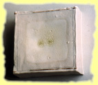
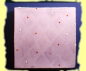
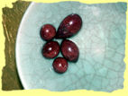
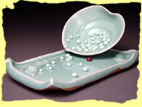

Angela Okajima is a recipient of a Fulbright Scholarship. She returned to the United States in the fall of 1998 and currently resides and teaches pottery in New York City


Conceptually, my work addresses 'the valuable space in between': literally the space between functional and sculptural ceramics. Titles of utilitarian ware such as 'Souffle/Dish' are given to the sculptures with a subtitle, which conveys a personal philosophy.�
Working sculpturally with clay, a material that is embedded in the human psyche as representing the serving up of sustenance has been challenging. Ceramicists at this time in history are held in a type of purgatory, not because of bad behavior but because of the absence of a second-market and a lack of acknowledgment by the traditional 'fine art' community. To move through this transition and to embrace Post Modernism, I choose to combine porcelain with non-traditional materials (fingernail polish, epoxy and leafing), abandoning all notions of function and serving up my own sustenance.